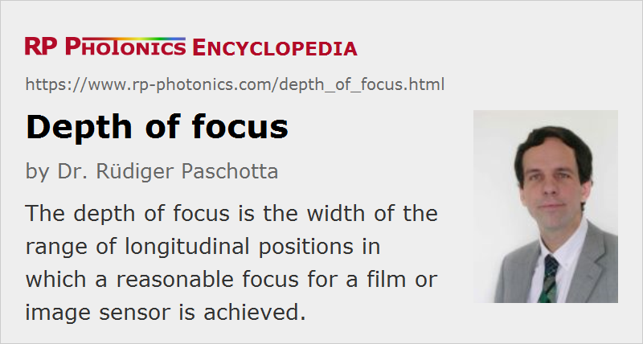

Depth of Focus
Definition: the half width of the range of longitudinal positions in which a reasonable focus for a film or image sensor is achieved
German: Fokuslänge, Fokustiefe
Categories: general optics, vision, displays and imaging
How to cite the article; suggest additional literature
Author: Dr. Rüdiger Paschotta
An imaging instrument usually contains some objective and an image sensor (e.g. in case of a digital photo camera) or a photographic film. For focusing to a certain object distance, one obtains an image plane somewhere behind the objective, where the image sensor or film should be placed. If the position deviates from the image plane, the image will be more or less blurred. The width of the range in which a reasonably sharp image is obtained is called the depth of focus.
The size of the depth of focus depends on the chosen sharpness criterion, as discussed in the article on depth of field. Frequently, one defines a certain maximum diameter C of the circle of confusion and calculates the depth of focus based on purely geometrical optics. That calculation is simple and leads to the result that the depth of focus is C / 2 divided by the tangent of the half opening angle. The latter approximately equals the numerical aperture for small enough angles.
These considerations were done for a fixed object distance. When the instrument is focused to other distances, the position of the image plane changes, and the depth of focus may also be changed.
The depth of focus is also relevant for the question what amount of tilt of the image sensor is tolerable, because that effectively changes the distance of various image points to the plane of the lens. Further, it is relevant if there is some field curvature, i.e., if the sharp image points lie on a curved surface.
Depth of Focus of a Laser Beam
The term depth of focus is sometimes also used in the context of laser beams. It is essentially the same meaning, but for a quantitative measure it is then more appropriate to use the Rayleigh length (for Gaussian beam) as a well defined parameter. In case of beams with imperfect beam quality, an effective Rayleigh length can be defined, which is increased by the beam quality factor M2.
Questions and Comments from Users
Here you can submit questions and comments. As far as they get accepted by the author, they will appear above this paragraph together with the author’s answer. The author will decide on acceptance based on certain criteria. Essentially, the issue must be of sufficiently broad interest.
Please do not enter personal data here; we would otherwise delete it soon. (See also our privacy declaration.) If you wish to receive personal feedback or consultancy from the author, please contact him e.g. via e-mail.
By submitting the information, you give your consent to the potential publication of your inputs on our website according to our rules. (If you later retract your consent, we will delete those inputs.) As your inputs are first reviewed by the author, they may be published with some delay.
See also: depth of field
and other articles in the categories general optics, vision, displays and imaging
|  |
If you like this page, please share the link with your friends and colleagues, e.g. via social media:
These sharing buttons are implemented in a privacy-friendly way!